DeepSeek-V3：把低成本训练，落实到每一次数据移动
DeepSeek-AI · DeepSeek-V3 Technical Report · arXiv:2412.19437 v2 · 53 页
首次提交：2024-12-27；指定版本修订：2025-02-18。技术报告，未核实会议或期刊发表信息；arXiv DOI：10.48550/arXiv.2412.19437。精读与扩展资料核验：2026-10-29。适合已了解 Transformer、矩阵乘法与基本推理流程的读者；阅读目标是能独立解释结构、算清资源，并判断实验的结论范围。
原始 PDF · arXiv 版本页 · 官方代码 · 模型权重与模型卡 · DeepSeek · 飞书全文镜像
本页按原论文 Abstract、§1–6、Appendix A–C 顺序展开。保留 11 组原图、15 张图像、9 张完整原表、编号公式 (1)–(28)，另有两张解释图与三组交互。原文未提供编号算法，代码框均为根据公式重建的伪代码。论文实测、官方后续资料和本页推导分开标明；本地只验证算术与代数，未进行 GPU 训练或吞吐复现。
Abstract / §1 Introduction — 全局理解与成本边界
一句话：DeepSeek-V3 将 MLA、细粒度 MoE、负载反馈路由、MTP 和面向 H800 的通信与 FP8 内核共同设计，以 37B 每 token 激活参数训练一个 671B 总参数模型。
一段话：论文关心的是如何用有限集群训练和服务一个有竞争力的大模型。MoE 将大容量权重分摊为少数激活专家，MLA 缩小持久 KV，偏置路由避免强均衡梯度干扰主任务，MTP 增加训练信号；DualPipe、分层 all-to-all 和细粒度 FP8 则让这些结构在 2048 张 H800 上真正运行。作者报告用 14.8T tokens 完成预训练，正式训练各阶段共 278.8 万 GPU 小时。它展示的是模型与系统的共同优化，不能由“FP8”或“37B 激活”单独解释。
五个关键点：
- 容量与算力分离。671B 决定大量权重必须被存储、分布和调度；37B 描述每 token 的激活路径，两者对应不同资源。
- Attention 压缩的是持久状态。MLA 存 512 维 KV latent 与 64 维位置 K；吸收权重可以避免每步展开历史 KV，但会改变计算内积维度。
- 路由同时服务学习与集群。内容分数负责混合，反馈偏置负责分配，节点限制负责控制跨节点通信。
- 低精度从反向链路设计。FP8 覆盖 Linear 的三类 GEMM；敏感算子、累加、缩放、缓存和转置仍需更高精度。
- MTP 首先是训练目标。正式模型使用一个额外预测深度；推理时可丢弃，或进入有验证与回滚的投机链路。
背景路线已经存在：Transformer 的 dense attention 和 FFN 容易随上下文、参数量增长而变贵；稀疏 MoE 减少每 token FFN 工作但产生 all-to-all；GQA/MQA 减少 KV heads，DeepSeek-V2 已提出 MLA；常见 auxiliary balancing loss 能避免专家塌缩，却也可能压制专家在单个序列或领域上的专门化。V3 的核心观察是：这些限制相互牵制，需要一起决定数据布局、路由范围、精度与并行粒度。
Figure 1 — 结果概览必须回到具体评测
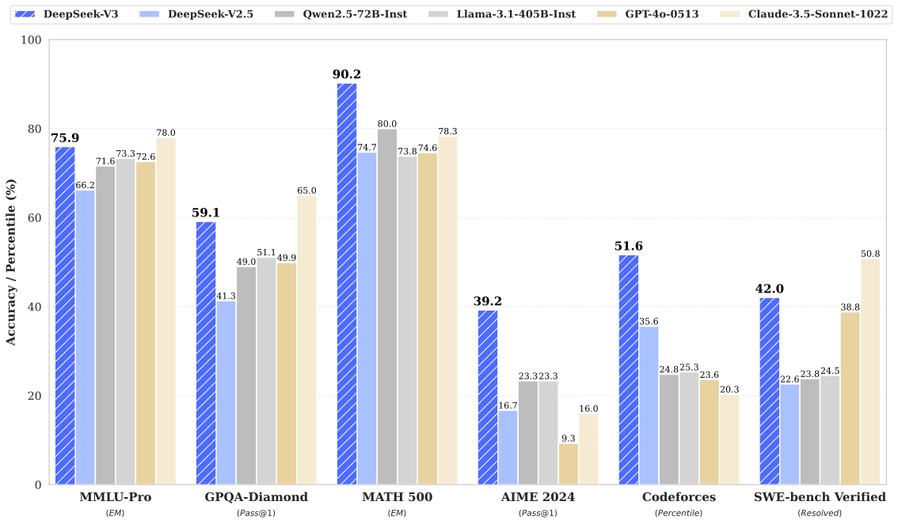
Source: Original paper v2 · Figure 1 · author vector asset. Click or press Enter to zoom.
从横轴任务开始，再比较各颜色模型在同一个任务的柱高。MMLU、数学、代码和指令遵循放在一起，用于呈现能力分布；每一组的指标定义、prompt 和采样规则不同。主要观察是 V3 在所展示的数学和代码项目上有竞争力。图没有展示所有弱项，也没有训练成本控制，不能据此计算统一“平均能力”或证明每个领域领先。完整比较见 §4 的 Table 3 与 §5 的 Table 6。
Table 1 — 557.6 万美元如何得到
| Training Costs | Pre-Training | Context Extension | Post-Training | Total |
|---|---|---|---|---|
| in H800 GPU Hours | 2664K | 119K | 5K | 2788K |
| in USD | $5.328M | $0.238M | $0.01M | $5.576M |
比较对象是同一轮 V3 正式训练的三个阶段，单位为 H800 GPU hours 与美元。2664K + 119K + 5K = 2788K GPUh；按作者假设的 2 美元/GPUh，分别为 5.328M、0.238M、0.010M，合计 5.576M 美元。这里 K 是千，M 是百万，不能把 2788K 读成 2788 小时。
180K GPUh / T tokens × 14.8T = 2.664M GPUh。若 2048 张卡连续满额分配，预训练等效天数为 2,664,000 / 2048 / 24 = 54.20 天，与作者“不到两个月”相符。这是基于资源总量的算账，不是本地测得的运行时长。正式训练成本明确不含此前研究、消融实验；机器购置、数据、员工和教师模型生产也不能由本表恢复。最重要的贡献是给出一轮训练的可检查资源账，不是整家公司建模成本的报价。
§2 Architecture — MLA、MoE 与 MTP 的实际数据流
Figure 2 — 把 Attention 状态和 FFN 容量分别稀疏化
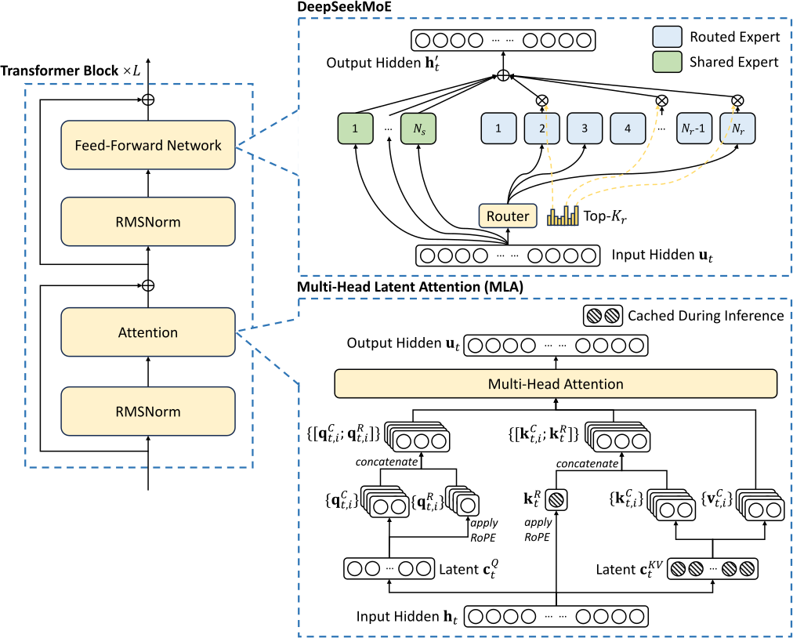
Source: Original paper v2 · Figure 2 · author vector asset. Click or press Enter to zoom.
左侧从输入隐状态向上读：归一化后经过 MLA，接残差，再进入 DeepSeekMoE 和残差。右侧展开 MoE：共享专家始终参与，路由专家按 token 选择少数。图中的“共享”指知识路径的共享，并不表示所有 routed experts 共享权重。MLA 箭头解释的是 KV 低秩投影与恢复，MoE 箭头解释的是 token dispatch 与结果 combine；两种压缩作用于不同对象。
官方推理配置进一步给出以下形状。它补充了论文本体省略的工程数值，来源是固定提交的 config_671B.json 与 inference/model.py [C1]：
| 对象 | 配置与形状 | 工程含义 |
|---|---|---|
| 隐状态 | h: [B,S,7168]；61 层 |
batch 与上下文决定激活体积 |
| Query heads | 128；内容 Q/K 每 head 128 维，RoPE 64 维 | 完整 Q/K 内积维度 192 |
| Value | 每 head 128 维 | 所有 head 拼接为 16384 维再输出投影 |
| Query latent | 1536 维 | 降低训练激活；Q 不是持久缓存 |
| KV latent | 512 维 | 被持久化，与所有 head 共享 |
| RoPE K | 64 维，所有 head 共享 | 需要独立缓存，不能省略 |
| FFN | 前 3 层 dense，中间维 18432 | 不能把 61 层全部计成 MoE |
| MoE | 后 58 层；256 routed + 1 shared；选 8 routed | 每 token 共使用 9 个专家路径 |
| 专家中间维 | 2048 | 单个专家为细粒度 SwiGLU |
| 词表 | 129280 | 论文“128K”是约称，参数估算应使用实际值 |
| 路由配置 | 8 groups，选 4 groups，scale=2.5 | 官方推理代码对归一化分数再乘缩放 |
| MTP | 训练深度 D=1 | 额外模块需单独统计 |
一个 SwiGLU 专家含 gate、up、down 三个矩阵，主要参数约为 3 × 7168 × 2048 = 44,040,192。58 层的 257 个专家主要矩阵合计约 656.463B，而每 token 的 9 个专家矩阵合计约 22.989B；其余参数来自 dense FFN、Attention、embedding、输出头等。模型的 671B/37B 为论文口径，不能仅凭这一子项精确重建。官方 embedding 与输出矩阵分别各约 0.9265B，必须检查是否真正共享，不能默认只计一次。MTP 又有额外 Transformer 与投影，报告的主体总量与训练附加权重应分列。
§2.1.1 MLA — 从公式 (1)–(11) 到缓存布局
令单个位置的列向量 h_t 为 7168 维。W^{DKV} 将它投到 512 维 c_t^{KV}；W^{UK}、W^{UV} 分别恢复 128 个 head 的内容 K 与 V。RoPE 不能简单塞进这个固定低秩恢复，因而 W^{KR} 直接生成共享的 64 维位置 K，再施加位置旋转。
| (1) |
Original LaTeX
\displaystyle\boxed{\color[rgb]{0,0,1}\mathbf{c}_{t}^{KV}}
\displaystyle=W^{DKV}\mathbf{h}_{t},| (2) |
Original LaTeX
\displaystyle[\mathbf{k}_{t,1}^{C};\mathbf{k}_{t,2}^{C};...;\mathbf{k}_{t,n_{h}}^{C}]=\mathbf{k}_{t}^{C}
\displaystyle=W^{UK}\mathbf{c}_{t}^{KV},| (3) |
Original LaTeX
\displaystyle\boxed{\color[rgb]{0,0,1}\mathbf{k}_{t}^{R}}
\displaystyle=\operatorname{RoPE}({W^{KR}}\mathbf{h}_{t}),| (4) |
Original LaTeX
\displaystyle\mathbf{k}_{t,i}
\displaystyle=[\mathbf{k}_{t,i}^{C};\mathbf{k}_{t}^{R}],| (5) |
Original LaTeX
\displaystyle[\mathbf{v}_{t,1}^{C};\mathbf{v}_{t,2}^{C};...;\mathbf{v}_{t,n_{h}}^{C}]=\mathbf{v}_{t}^{C}
\displaystyle=W^{UV}\mathbf{c}_{t}^{KV},公式 (1) 的矩阵为 [512,7168]；(2) 与 (5) 的恢复矩阵分别为 [128×128,512]。(3) 的投影为 [64,7168]；(4) 在单个 head 上将 [128] 内容 K 和共享 [64] RoPE K 拼接为 [192]。蓝色方框标明真正持久化的对象：c^{KV} 和旋转后的 k^R。内容 K 和 V 可按需恢复，恢复出的 16384 维向量不需要成为历史缓存。归一化和缩放属于实现链路，不能在代数简写中误认为可以删除。
Query 也低秩压缩：W^{DQ}: [1536,7168]，内容恢复 [16384,1536]，位置分支 [8192,1536]，每个 head 合成 192 维 Q。
| (6) |
Original LaTeX
\displaystyle\mathbf{c}_{t}^{Q}
\displaystyle=W^{DQ}\mathbf{h}_{t},| (7) |
Original LaTeX
\displaystyle[\mathbf{q}_{t,1}^{C};\mathbf{q}_{t,2}^{C};...;\mathbf{q}_{t,n_{h}}^{C}]=\mathbf{q}_{t}^{C}
\displaystyle=W^{UQ}\mathbf{c}_{t}^{Q},| (8) |
Original LaTeX
\displaystyle[\mathbf{q}_{t,1}^{R};\mathbf{q}_{t,2}^{R};...;\mathbf{q}_{t,n_{h}}^{R}]=\mathbf{q}_{t}^{R}
\displaystyle=\operatorname{RoPE}({W^{QR}}\mathbf{c}_{t}^{Q}),| (9) |
Original LaTeX
\displaystyle\mathbf{q}_{t,i}
\displaystyle=[\mathbf{q}_{t,i}^{C};\mathbf{q}_{t,i}^{R}],Query latent 的意义主要在训练激活和投影参数；Decode 只需要当前 Q，历史 Query 不保存。内容 Q/K 点积加位置 Q/K 点积，除以 sqrt(128+64)，对可见历史位置做 softmax，再对 V 加权。
| (10) |
Original LaTeX
\displaystyle\mathbf{o}_{t,i}
\displaystyle=\sum_{j=1}^{t}\operatorname{Softmax}_{j}(\frac{\mathbf{q}_{t,i}^{T}\mathbf{k}_{j,i}}{\sqrt{d_{h}+d_{h}^{R}}})\mathbf{v}_{j,i}^{C},| (11) |
Original LaTeX
\displaystyle\mathbf{u}_{t}
\displaystyle=W^{O}[\mathbf{o}_{t,1};\mathbf{o}_{t,2};...;\mathbf{o}_{t,n_{h}}],公式 (10) 的 softmax 轴是历史 j≤t，不是 heads；o_{t,i} 仍是 128 维 Value 输出。(11) 拼接 heads 后用 W^O: [7168,16384] 回到主干隐状态，才能接残差。对序列一次并行处理时还需要 causal mask。低秩 KV 没有取消 Prefill 的二次序列依赖。
权重吸收的代数重建。写出某个 head 的内容 K 恢复矩阵 W_i^{UK}：
LaTeX
(q_{t,i}^{C})^{T}W_i^{UK}c_j^{KV}
=((W_i^{UK})^{T}q_{t,i}^{C})^{T}c_j^{KV}.先将当前 Q 映射到 512 维 latent 空间，所有历史 latent 直接参与点积。得到概率后，先在 latent 空间累加，再恢复当前输出：
LaTeX
\tilde q_{t,i}=(W_i^{UK})^{T}q_{t,i}^{C},\quad
\ell_{t,i,j}=\frac{\tilde q_{t,i}^{T}c_j^{KV}+(q_{t,i}^{R})^{T}k_j^{R}}{\sqrt{192}},
\quad z_{t,i}=\sum_{j\leq t}p_{t,i,j}c_j^{KV},\quad o_{t,i}=W_i^{UV}z_{t,i}.这是同一个 MLA 参数化在实数代数中的等价变形；浮点舍入仍可能不同，更不意味着能无损替换任意已训练的 MHA。RoPE 分支明确留在 latent 内积之外；位置依赖旋转不能任意穿过固定权重矩阵。某些实现还可把 Value 恢复并入后续输出投影，但必须保持 head 对应关系。
缓存与算力分别算。每 token 每层存 (512+64)×2=1152 字节；61 层为 70272 字节/token。S=131072、batch=1 得 9,210,691,584 字节 = 8.578125 GiB。若将同配置的每个 head K=192 与 V=128 直接物化，存 128×(192+128)=40960 个元素，相对 latent 576 个元素为 71.11×。若基线采用 K/V 都为 128 的另一种 MHA，则比值是 56.89×；两种参照不应混写。
吸收式 Decode 的 score 计算量约 O(S n_h (d_c+d_R))，latent AV 约 O(S n_h d_c)，其中 d_c=512。物化版的内容维是 128，内积维度反而更小，但读取历史 KV 显著更多。MLA 的价值因此需由 memory bandwidth、tile、head 复用和 kernel 证明，不能把 71.11× 缓存比当成 71.11× TPOT 提升。TP4 分 head 不保证 latent 按 4 分片：相同 latent 可能被每 rank 复制。页对齐、块碎片、scale、调度预留和 MTP 缓存都在上述逻辑账之外。
MLA：缓存减少多少，究竟保存什么？
调整长度、batch、存储字节和 TP rank 数。比较 576 元素 latent 与同形状的 40960 元素物化 K/V；另示 latent 被每个 rank 复制的总量。仅为逻辑缓存，不含页、scale、工作区与 MTP。
一个 2 维 toy 的权重吸收校验
仅验证同一组矩阵的实数代数；不模拟 RoPE 和真实 kernel。实际 RoPE 点积仍是独立分支。
§2.1.2 DeepSeekMoE — 选择与混合权重是两条路径
公式 (12) 将 Attention 输出 u_t、所有共享专家与被选 routed experts 的加权输出相加。e_i 是第 i 个专家的路由向量，形状 [7168]；s_{i,t} 是 sigmoid 内容亲和度，范围 (0,1)，各专家分数并不自动和为 1。
| (12) |
Original LaTeX
\displaystyle\mathbf{h}_{t}^{\prime}
\displaystyle=\mathbf{u}_{t}+\sum_{i=1}^{N_{s}}{\operatorname{FFN}^{(s)}_{i}\left(\mathbf{u}_{t}\right)}+\sum_{i=1}^{N_{r}}{g_{i,t}\operatorname{FFN}^{(r)}_{i}\left(\mathbf{u}_{t}\right)},| (13) |
Original LaTeX
\displaystyle g_{i,t}
\displaystyle=\frac{g^{\prime}_{i,t}}{\sum_{j=1}^{N_{r}}g^{\prime}_{j,t}},| (14) |
Original LaTeX
\displaystyle g^{\prime}_{i,t}
\displaystyle=\begin{cases}s_{i,t},&s_{i,t}\in\operatorname{Topk}(\{s_{j,t}|1\leqslant j\leqslant N_{r}\},K_{r}),\\
0,&\text{otherwise},\end{cases}| (15) |
Original LaTeX
\displaystyle s_{i,t}
\displaystyle=\operatorname{Sigmoid}\left({\mathbf{u}_{t}}^{T}\mathbf{e}_{i}\right),原始 gate 将 Top-8 之外的权重置零，再对选中专家分数归一化。(13) 的分母虽然写成全部 N_r，非选中项为零，等价于仅对入选项求和。共享专家不进入这次 Top-8 归一化。
Auxiliary-loss-free balancing。新机制引入每个 expert 的偏置 b_i，只改变选择分数 s_i+b_i：
| (16) |
Original LaTeX
\displaystyle g^{\prime}_{i,t}
\displaystyle=\begin{cases}s_{i,t},&s_{i,t}+b_{i}\in\operatorname{Topk}(\{s_{j,t}+b_{j}|1\leqslant j\leqslant N_{r}\},K_{r}),\\
0,&\text{otherwise}.\end{cases}Top-K 内保留的 g'_i 仍然是原始 s_i，不是 s_i+b_i。批次结束后统计 expert 负载，超载者 b_i -= γ，低载者 b_i += γ；这是负反馈更新，没有通过该更新给主任务叠加均衡梯度。可以类比调度优先级：负载改变机会，而内容亲和度决定被选中后的贡献。
一个四专家 toy：分数 [.9,.8,.7,.2]，Top-2 原本选前两名。给第四个专家 b=.8 后选择分数变为 [.9,.8,.7,1.0]，入选四、第一；混合权重是 .2/1.1 和 .9/1.1，而不是 1.0/1.9 与 .9/1.9。这避免把“均衡需要”伪装成“内容相关性”。
并非完全没有 auxiliary loss。正式训练还保留系数 α=0.0001 的 sequence-wise complementary balancing，防止单个序列过分不均衡。T 是序列 token 数，f_i 是按理想负载归一化的命中频率，P_i 是序列平均归一化亲和度，二者乘积对高频高分专家施加惩罚。
| (17) |
Original LaTeX
\displaystyle\mathcal{L}_{\mathrm{Bal}}
\displaystyle=\alpha\sum_{i=1}^{N_{r}}{f_{i}P_{i}},| (18) |
Original LaTeX
\displaystyle f_{i}=\frac{N_{r}}{K_{r}T}\sum_{t=1}^{T}\mathds{1}
\displaystyle\left(s_{i,t}\in\operatorname{Topk}(\{s_{j,t}|1\leqslant j\leqslant N_{r}\},K_{r})\right),| (19) |
Original LaTeX
\displaystyle s^{\prime}_{i,t}
\displaystyle=\frac{s_{i,t}}{\sum_{j=1}^{N_{r}}s_{j,t}},| (20) |
Original LaTeX
\displaystyle P_{i}
\displaystyle=\frac{1}{T}\sum_{t=1}^{T}{s^{\prime}_{i,t}},理想均衡时 f_i≈1、P_i≈1/N_r，总和约 1。f_i 包含离散 indicator，主要可微信号通过 P_i 传递。公式 (18) 原文 indicator 写的是未加偏置的 Top-K，本页按原样保留；它不能被当成完整生产路由规范直接粘贴。需要结合 (16)、负载统计实际定义和实现决定计数路径。
节点限制。每 token 最多访问四个节点。每个节点用本节点排名最高 K_r/M=8/4=2 个专家分数之和评估，再选节点并选专家。局部 NVLink 远快于跨节点 IB，少发目标节点比少发某个专家更直接影响网络压力。官方代码采用 8 个 groups、选择 4 个、组内 top-2 汇总；逻辑 group 如何落到物理 node 由放置策略决定，不能在任意部署上把 group 直接等同 node。作者报告训练与推理中不丢 token，这是实验配置结果，不是无论瞬时流量和 capacity 如何都不会过载的硬保证。
Bias 改变入选，原始分数决定贡献
固定四个专家分数 [0.9, 0.8, 0.7, 0.2]，选择 Top-2。增加第四专家偏置，观察它先获得路由机会，再以原始 0.2 参与归一化。这里不模拟节点限制和真实负载反馈。
Toy 权重和为 1；官方推理 routed 分支还乘 route_scale=2.5。真实模型有 256 routed experts + 1 shared，Top-8，不能从四专家示例推断实际负载。
# Agent reconstruction; node/group placement is an external contract.
score = sigmoid(hidden @ router_weight.T)
selection = score + bias
allowed_groups = topk(sum_top2_by_group(selection), k=4)
chosen = topk(mask_other_groups(selection, allowed_groups), k=8)
mix = score[chosen] / sum(score[chosen]) # unbiased scores
output = shared_expert(hidden) + sum(mix * experts[chosen](hidden))
# Official inference additionally scales routed mixture by route_scale=2.5.
# After a training batch: update bias from measured load, not autograd.
输入是 [tokens,7168]，gate score 为 [tokens,256]，expert ids/weights 为 [tokens,8]。实现必须传递 token 的逆映射：dispatch 后按 expert 排列，combine 后恢复原 token 位置。漏失偏置、错用混合分数、把统计范围缩到微批、或把 group id 当成机器 id，都可能编译成功却改变学习和通信行为。
§2.2 MTP — 保留预测因果链
Figure 3 — 图示两个深度，正式训练一个深度
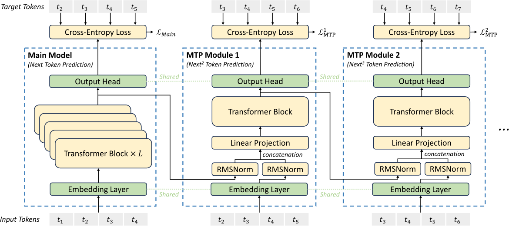
Source: Original paper v2 · Figure 3 · author vector asset. Click or press Enter to zoom.
先沿左侧主模型观察 next-token prediction，再向右读额外深度。第 k 层同时接收上一深度隐状态与位置 i+k 的 token embedding；各自 RMSNorm 后拼接，投影回 d 维，再进入独立 Transformer block、共享输出头，预测 i+k+1。图展示通用 D=2，实际 V3 是 D=1；不能按图多算两个正式模块。共享 embedding 与输出头降低额外参数，却没有免除 Transformer 计算。
| (21) |
Original LaTeX
\mathbf{h}_{i}^{\prime k}=M_{k}[\operatorname{RMSNorm}(\mathbf{h}_{i}^{k-1});\operatorname{RMSNorm}(\operatorname{Emb}(t_{i+k}))],| (22) |
Original LaTeX
\mathbf{h}_{1:T-k}^{k}=\operatorname{TRM}_{k}(\mathbf{h}_{1:T-k}^{\prime k}),| (23) |
Original LaTeX
P_{i+k+1}^{k}=\operatorname{OutHead}(\mathbf{h}_{i}^{k}).h_i^{k-1}: [d]、Emb(t_{i+k}): [d]，拼接后 [2d]，M_k: [d,2d]。序列长度随深度为 T-k，保证未来 token 只通过正确的 shifted input 进入对应预测位置。Teacher forcing 下实际下一个 token 已知；推理若不经验证直接把它当作已生成 token，就会破坏链路。
| (24) |
Original LaTeX
\mathcal{L}_{\text{MTP}}^{k}=\operatorname{CrossEntropy}(P_{2+k:T+1}^{k},t_{2+k:T+1})=-\frac{1}{T}\sum_{i=2+k}^{T+1}\log P_{i}^{k}[t_{i}],| (25) |
Original LaTeX
\mathcal{L}_{\text{MTP}}=\frac{\lambda}{D}\sum_{k=1}^{D}\mathcal{L}_{\text{MTP}}^{k}.每个深度对后移目标做交叉熵，λ/D 平均额外目标，再与主体 next-token loss 共同训练。公式 (24) 沿用作者 1/T 分母，目标长度及尾部 mask 需由 batch 构造落实。新颖性是条件串行链：后一个预测的状态依赖前一个深度，区别于互相独立的多个 prediction heads [R4]。作者认为额外预测提高样本效率；Table 4 支持部分任务提升，但固定 token 数不等于固定训练 FLOPs。
推理有两种使用方式：丢弃 MTP 模块，只使用被增强的主模型；或把 MTP 当 proposer，由主模型验证额外 token。85–90% 接受率和约 1.8× TPS 属于作者特定服务实验报告，不能由训练图直接推出，也不能略过拒绝采样、KV commit/rollback 与额外验证成本。成本交互放在 §5.3.3，避免将训练优势和推理优势混成一项。
§3 Infrastructures — 从集群到每个算子
§3.1 Compute cluster — 并行维度不能机械相乘
训练使用 2048 张 H800，每节点 8 张，通过 NVLink 连接，节点间用 InfiniBand。作者针对这条通信路径给出约 160 GB/s NVLink / 50 GB/s IB，比值 3.2；这不是厂商所有链路合计的峰值规格。通用硬件宣传带宽不能替代这里的 per-path 参数。
§3.2 Training framework — PP16、EP64、ZeRO-1
HAI-LLM 将流水线分为 16 stages，专家并行覆盖 64 GPU / 8 节点，数据并行使用 ZeRO-1。训练不使用 TP，减少细粒度同步；§3.4 推理则使用 TP4。EP 与 DP 的组可能在不同权重类别上重叠，不能把 PP×EP×某个 DP 数直接当成总卡数。在复现中必须按 dense 参数、专家参数、优化器状态分别画出进程组与复制/分片关系。
§3.2.1 DualPipe — 时间重叠建立在依赖分析上
Figure 4 — 一个 forward 与另一个 backward 如何穿插
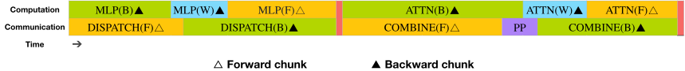
Source: Original paper v2 · Figure 4 · author vector asset. Click or press Enter to zoom.
按横轴时间看橙色 forward、绿色输入梯度 backward、蓝色权重梯度、紫色 PP 通信和红色 barrier。每个 chunk 拆为 ATTN、all-to-all dispatch、MLP、all-to-all combine，再配合 PP 通信；backward 进一步分为 Dgrad 与 Wgrad。不同 chunk 的工作可以互补填空，但同一个 token 的 MLP 不能先于 dispatch 完成、combine 不能先于 expert 输出完成。
图中 block 边界不对齐正是为了找到可调度的独立工作，而不是绕过数据依赖。“Fully hidden”指特定 chunk 时间、SM 分配和通信路径下，墙钟关键路径上几乎没有显式空洞；通信仍消耗网络、SM、HBM/L2 和同步资源。
Figure 5 — 双向流水线降低气泡
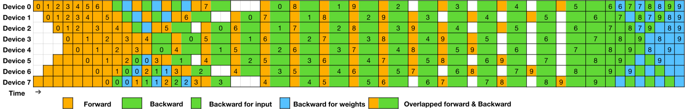
Source: Original paper v2 · Figure 5 · author vector asset. Click or press Enter to zoom.
从一个 PP rank 的横向轨迹开始，再比较最上与最下 rank：forward 微批从两端进入，backward 和 weight-gradient 填在相反方向的空隙。图为 8 ranks、20 micro-batches 的示例，反向微批省略编号；共用黑边框的两个格表示有重叠，不表示两个相依算子“同一时刻免费完成”。正式训练是 PP16，不可用图例卡数覆盖实际配置。
Table 2 — 气泡更少，参数与激活更多
| Method | Bubble | Parameter | Activation |
|---|---|---|---|
| 1F1B | |||
| ZB1P | |||
| DualPipe (Ours) |
PP 为 pipeline stages，F、B 为单独 forward/backward 时间，W 为权重梯度时间，F&B 是作者定义的重叠执行 chunk 时间，不是算术 F+B。标准 1F1B 和 ZB1P 的参数相对量为 1×，DualPipe 为 2×；激活相对量从 PP 到 PP+1。PP16 对应额外激活容量比 17/16−1=6.25%，不是总 GPU 内存增加 6.25%：权重、优化器、碎片和通信 buffer 另算。
比较公平性依赖同样的 chunks 和硬件时间；若通信占用 SM 使 F&B 拉长，气泡公式本身不能保证吞吐增加。复现 DualPipe 必须实现自定义 overlapped forward/backward 并实测 SM/L2 竞争 [C5]。调度器降低等待不等于能自动把普通模块包装为零通信。
§3.2.2 Efficient cross-node all-to-all — 先跨节点一次，再本地扇出
每个 token 先经 IB 发到目标节点上同 index 的 GPU，再通过 NVLink 分发到对应专家 GPU。一个节点里多个专家共享跨节点那次传输。作者按带宽比估计，每个节点平均可以承载约 3.2 个专家选择，在四节点限制内近似允许约 13 个专家而不增加同档 IB 压力；正式 Top-K 仍是 8，不能改写为 V3 激活 13 个专家。
dispatch 与 combine 使用 10 个通信 channels、20 个 SM，warp specialization 分开 IB 发送、IB→NVLink 转发和 NVLink 接收。H800 132 SM 中占 15.15%。所谓低通信开销仍以这些资源为代价；过多 channel 可能使 L2 与计算争用，过少则 IB 饥饿。因此应同时看 exposed time、通信吞吐、SM 利用与计算 slowdown。
数据流不是传送专家权重给每个 token，而是传送 token activations 到专家，再返回加权结果。后续工具可能增加 expert weight prefetch，那是另一个生命周期，不能反过来替换 V3 的 dispatch 解释。
§3.2.3 Memory saving — 保存什么，重算什么
作者在反向重算 RMSNorm 和 MLA up-projection，减少驻留激活；EMA 参数更新异步迁移到 CPU，减少 GPU 存储压力；embedding 与输出 head 在双向 PP 物理同 rank 上处理，便于 MTP 共享参数和梯度。重算省显存但增加算子调用和 FLOPs，CPU 异步路径仍需保证 buffer 在消费前有效、更新版本一致，不能把 host copy 视为无成本。
这里的内存账应分为权重、master weights、gradient、moments、activation、communication buffers、临时 cast 与 KV。37B 激活参数只控制一次 token 计算，不代表其余专家可以从训练常驻权重中消失。
§3.3 FP8 training — 在三条 GEMM 链路中限制误差
§3.3.1 Mixed precision / Figure 6 — 哪些状态保留高精度
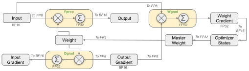
Source: Original paper v2 · Figure 6 · author vector asset. Click or press Enter to zoom.
先从上方 forward 的 X 与 W 进入 GEMM，再沿 backward 的 output gradient 分到 activation gradient 和 weight gradient。E4M3 是三个主要 Linear GEMM 的低精度输入格式：
| 链路 | 矩阵关系 | 输出作用 | 主要风险 |
|---|---|---|---|
| Fprop | Y=X Wᵀ |
传给下个算子 | 激活/权重 outlier 和舍入 |
| Dgrad | dX=dY W |
继续反向穿过前面层 | 误差连续传播、梯度尾部 |
| Wgrad | dW=dYᵀ X |
更新参数 | 长 K 累加与训练漂移 |
图只画 Linear，embedding、output head、router、RMSNorm、attention 仍保留 BF16/FP32。Adam moments 采用 BF16，master weights 与 gradients 保持 FP32。FP8 Tensor Core 的理论 throughput 优势不能外推为全模型两倍；未量化算子、通信和 cast 必须进入端到端成本。
§3.3.2 Fine-grained quantization 与累加
Figure 7 — 小块 scale 与短累加窗口分别解决不同误差
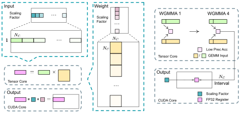
(a) Fine-grained quantization · (b) Increasing accumulation precision
Source: Original paper v2 · Figure 7 · author vector asset. Click or press Enter to zoom.
(a) Fine-grained quantization：左侧 X 按 1×128，每个 token 独立划分 feature 小组；W 按 128×128 块。online amax 为各小组确定 scale，减轻某个异常 feature 将整行或整张 tensor 的分辨率压低。彩色小块是量化尺度区域，不是 MoE expert 分片。矩阵缩放因 K 分组而变化，不能只在最终结果乘一个全局 scale。
(b) Increasing accumulation precision：右侧每积累 N_C=128 元素，也就是作者所述 4 次 WGMMA，转交 CUDA Cores 做 FP32 累加。原因是 H800 上作者观察的 Tensor Core 累加精度有限，长 K=4096 时最大相对误差约 2%；较短窗口控制误差，代价是 promotion 和额外同步。两套 warp groups 交错，有助于覆盖 promotion 时间，但仍需测开销。图下分面标题已移至这两段纯文本，原作者完整 PDF 可下载；轴、模块和箭头保持原样。
把 block quantization 写成解释性公式，令第 g 个 K 区间的 scale 为 s^X_g 与 s^W_g：
LaTeX
Y_{m,n}\approx\sum_g s^X_{m,g}s^W_{g,n}\left(\sum_{k\in g}Q^X_{m,k}Q^W_{n,k}\right).误差包含输入量化误差、scale 计算误差、部分和累加误差、重排/再次量化误差。只看最终 clamp 是否饱和不足以诊断训练发散；最容易忽略的是 Dgrad 中逐层传递的细小梯度。
Mantissa over exponents。常见 hybrid FP8 用 Fprop E4M3、Dgrad/Wgrad E5M2，以更多 exponent bits 换动态范围。V3 在三条链路都采用 E4M3，选择 3 个 mantissa bits 的较高分辨率，再用小组独立 scale 补偿动态范围。它成立的前提是分块足够小、scale 跟上当前数据；不能只改 dtype 并继续 tensor-wise scale。
Online quantization。一些框架根据历史 amax 延迟估计当前 scale，数据分布突变时可能出现范围失配。V3 每个 activation tile 和 weight block 在线计算当前 amax，再量化。这减少 scale 滞后，但需要额外 reduction 和数据读取。对 1×128 tile，只有当前 token 的 128 features 共享尺度；对 128×128 weight block，16384 个权重共享尺度。两者统计样本与 outlier 影响不同，不能统一成“每 128 个数一个 scale”。
§3.3.3 Storage 与低精度通信
作者保存一部分中间激活为低精度，在 backward 重算其他结果；SwiGLU 保存 FP8 输入，重算输出以省缓存。Attention 输出投影的输入较敏感，使用自定义 E5M6 保存，其含义是更高精度的特殊格式，不能混写成 FP8 的 E5M2。
某些必须转置的 tensor 从 1×128 分组变成 128×1。若重新选 scale 并重新量化，就叠加误差；作者约束 scale 为 2 的幂以减轻这类操作引入的精度损失。存储格式、计算格式与转置布局因此是三个契约，不能把一个 dtype=fp8 设置当成全部方案。
MoE dispatch 采用带 power-of-two scales 的 FP8 activations，返回 combine 用 BF16。这意味着通信前的 cast、scale 打包、remote buffer 与 expert kernel 要一致；combine 还要保证重复 token 对齐、累加顺序与 route weights 正确。该精度策略属于训练工程，不是 SmoothQuant 那类部署期 INT8 权重/激活变换 [R6]。
§3.4 Inference and deployment — Prefill 与 Decode 分别布置
作者建议的服务单元如下，属于吞吐目标下的部署设计，不是模型权重理论可容纳的唯一最小卡数：
| 阶段 | GPU / 节点 | Attention | MoE | 主要瓶颈与安排 |
|---|---|---|---|---|
| Prefill | 32 GPU / 4 节点 | TP4 + SP；DP8 | EP32；dense MLP TP1 | 更大的 GEMM，两个微批覆盖通信 |
| Decode | 320 GPU / 40 节点 | TP4 + SP；DP80 | EP320 | 每 expert batch 常 ≤256，权重读取与小 GEMM |
Prefill 对 256 routed experts 增加 32 冗余专家，每 GPU 持有 8 个原专家和 1 个冗余；依据约十分钟窗口负载调整。动态冗余方法仍有探索表述，要区分已有部署与研究计划。Decode 每 GPU 放一个专家，余下 64 GPU 用于共享/冗余，shared 视为总被选择的第九条路径。节点间直接 IB point-to-point、IBGDA 减少中转；microbatch overlap 和动态路由也需按原文成熟度分别理解。
服务链路分析。TTFT 包含排队、tokenize、prefill、KV 转移及首 token；TPOT 包含 attention、dispatch、expert、combine、采样和调度。若 Prefill 与 Decode 使用不同量化、position scale、输出头或 cache 格式，首 token 路径可能产生 logits 漂移。统一首 token 生成归属并核验 cache 边界，比只对某个 GEMM 跑 benchmark 更接近业务目标。论文未公开服务队列、并发曲线、P95/P99 与全链路 trace，因此不能从“320 卡”估算用户实际 TTFT。
§3.5 Hardware proposals — 减少额外搬运与资源争用
作者向硬件提出四类需求：把通信从占用计算 SM 的软件 kernel 中卸载；支持可靠 FP32 accumulation；让 Tensor Core 支持细粒度 scale；融合 cast/TMA 与转置布局。
例如 BF16 activation 的 unfused cast 至少需要：读 BF16 2 字节、写 FP8 1 字节、GEMM 再读 FP8 1 字节，合计 4 字节/元素，还未计 scale；直接 BF16 GEMM 的输入读取是 2 字节。这是 IO 下界的算账，不是每次都必然来自 HBM，因为缓存和融合改变实际 traffic。只有在 cast 与 load/compute 融合后，FP8 更少的传输量才容易兑现。测量时应分解 online amax、cast、transpose、TMA、GEMM、promotion 和通信同步，而不是只记录整段 latency。
§4 Pre-Training — 数据、日程与消融证据
§4.1 Data construction — 14.8T tokens 的信息密度
训练集扩大代码与数学比例，增加多语言，继续做质量过滤和去重。论文没有公开足以逐样本复现的数据清单与全部比例，因此 token 总量可核对，数据收益无法完全隔离。采用 FIM 的 PSM 格式、比例 0.1，提高代码补全能力。文档 packing 时预训练不做跨样本 attention mask；这与 §5 SFT 的样本隔离不同。
tokenizer 特别处理标点与换行，使某些文本段落的边界编码更合适。相同文本的 token 数随 tokenizer 变化，预训练 token 总数不能直接等同不同模型读取的字节量；Table 3 用 BPB 有助于跨 tokenizer 比较，但不解决数据质量与计算预算差异。
§4.2 Hyperparameters — 训练时间线
AdamW：β1=.9、β2=.95、weight decay=.1、gradient clipping=1；sequence length=4096。batch size 在前 469B tokens 从 3072 增至 15360。学习率前 2000 steps warmup 至 2.2×10⁻⁴，保持至 10T tokens；接下来 4.3T 余弦下降至 2.2×10⁻⁵，最后 333B 保持该值、167B 降至 7.3×10⁻⁶。
路由 bias 更新速度 γ=.001，前 14.3T 启用，最后 .5T 置零；MTP λ 前 10T 为 .3，此后 .1。停止 bias 更新使后段路由稳定，减小额外目标权重使后段更聚焦主任务，这是与训练相位配套的选择，不能把单个常数脱离日程解释。
若按最终 batch 每次 15360×4096，约 6291 万 tokens/step。但 batch 早期不同，不能用最终值倒推出全部 steps。作者报告训练稳定、没有不可恢复 loss spike 或回滚，这是观察；没有逐步完整日志与复现，不足以证明任意数据/硬件配置都稳定。
§4.3 Long context — YaRN 两阶段扩展
从 4K 到 32K，再到 128K，分别运行 1000 steps，batch 1920 和 480，LR 7.3×10⁻⁶。若 K=1024，两个阶段每 step 都是约 6291 万 tokens；若语境中使用十进制 K，会约 6144 万，口径应明示。YaRN scale=40，β=32、α=1，temperature 的平方根写为 .1 ln(s)+1；实现 Attention scale 的平方关系需与公式一致 [C1]。
Figure 8 — 单针检索不是所有长上下文能力
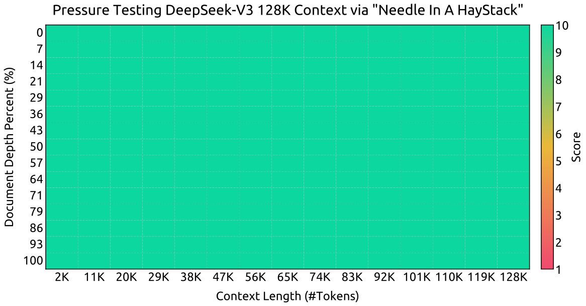
Source: Original paper v2 · Figure 8 · author vector asset. Click or press Enter to zoom.
读横轴 context length，纵轴 needle 所在位置，再观察颜色代表的检索得分。该图说明在所测 NIAH 模板、位置和长度下，模型能找到插入的信息，上限到 128K。颜色接近饱和不等于真实多文档推理、长程代码依赖、多针混淆、prefill 延迟或 KV 内存都解决。长上下文评估仍需多任务与服务预算。
§4.4 Base evaluation — 完整结果与非胜出项
Table 3 — 容量更大、激活更少，与 dense 基线比较
| Benchmark (Metric) | # Shots | DeepSeek-V2 | Qwen2.5 | LLaMA-3.1 | DeepSeek-V3 | |
| Base | 72B Base | 405B Base | Base | |||
| Architecture | - | MoE | Dense | Dense | MoE | |
| # Activated Params | - | 21B | 72B | 405B | 37B | |
| # Total Params | - | 236B | 72B | 405B | 671B | |
| English | Pile-test (BPB) | - | 0.606 | 0.638 | 0.542 | 0.548 |
| BBH (EM) | 3-shot | 78.8 | 79.8 | 82.9 | 87.5 | |
| MMLU (EM) | 5-shot | 78.4 | 85.0 | 84.4 | 87.1 | |
| MMLU-Redux (EM) | 5-shot | 75.6 | 83.2 | 81.3 | 86.2 | |
| MMLU-Pro (EM) | 5-shot | 51.4 | 58.3 | 52.8 | 64.4 | |
| DROP (F1) | 3-shot | 80.4 | 80.6 | 86.0 | 89.0 | |
| ARC-Easy (EM) | 25-shot | 97.6 | 98.4 | 98.4 | 98.9 | |
| ARC-Challenge (EM) | 25-shot | 92.2 | 94.5 | 95.3 | 95.3 | |
| HellaSwag (EM) | 10-shot | 87.1 | 84.8 | 89.2 | 88.9 | |
| PIQA (EM) | 0-shot | 83.9 | 82.6 | 85.9 | 84.7 | |
| WinoGrande (EM) | 5-shot | 86.3 | 82.3 | 85.2 | 84.9 | |
| RACE-Middle (EM) | 5-shot | 73.1 | 68.1 | 74.2 | 67.1 | |
| RACE-High (EM) | 5-shot | 52.6 | 50.3 | 56.8 | 51.3 | |
| TriviaQA (EM) | 5-shot | 80.0 | 71.9 | 82.7 | 82.9 | |
| NaturalQuestions (EM) | 5-shot | 38.6 | 33.2 | 41.5 | 40.0 | |
| AGIEval (EM) | 0-shot | 57.5 | 75.8 | 60.6 | 79.6 | |
| Code | HumanEval (Pass@1) | 0-shot | 43.3 | 53.0 | 54.9 | 65.2 |
| MBPP (Pass@1) | 3-shot | 65.0 | 72.6 | 68.4 | 75.4 | |
| LiveCodeBench-Base (Pass@1) | 3-shot | 11.6 | 12.9 | 15.5 | 19.4 | |
| CRUXEval-I (EM) | 2-shot | 52.5 | 59.1 | 58.5 | 67.3 | |
| CRUXEval-O (EM) | 2-shot | 49.8 | 59.9 | 59.9 | 69.8 | |
| Math | GSM8K (EM) | 8-shot | 81.6 | 88.3 | 83.5 | 89.3 |
| MATH (EM) | 4-shot | 43.4 | 54.4 | 49.0 | 61.6 | |
| MGSM (EM) | 8-shot | 63.6 | 76.2 | 69.9 | 79.8 | |
| CMath (EM) | 3-shot | 78.7 | 84.5 | 77.3 | 90.7 | |
| Chinese | CLUEWSC (EM) | 5-shot | 82.0 | 82.5 | 83.0 | 82.7 |
| C-Eval (EM) | 5-shot | 81.4 | 89.2 | 72.5 | 90.1 | |
| CMMLU (EM) | 5-shot | 84.0 | 89.5 | 73.7 | 88.8 | |
| CMRC (EM) | 1-shot | 77.4 | 75.8 | 76.0 | 76.3 | |
| C3 (EM) | 0-shot | 77.4 | 76.7 | 79.7 | 78.6 | |
| CCPM (EM) | 0-shot | 93.0 | 88.5 | 78.6 | 92.0 | |
| Multilingual | MMMLU-non-English (EM) | 5-shot | 64.0 | 74.8 | 73.8 | 79.4 |
比较 V2 Base、Qwen2.5 72B Base、Llama-3.1 405B Base 和 V3 Base。表列保留 shot 数、EM、F1、Pass@1、BPB；作者同一评测框架将 ≤0.3 差距视为近似持平。训练 tokens、数据与总参数不同，不是 fixed-compute architecture-only 对照。
V3 HumanEval 65.2 对最强表内基线 Llama 的 54.9，+10.3 个百分点、相对 +18.76%；MATH 61.6 对 Qwen 54.4，+7.2 个百分点、相对 +13.24%。MMLU 87.1 对 85.0，+2.1 个百分点。它也有明确落后项：Pile BPB .548 高于 Llama .542（越低越好）；RACE-Middle 67.1 对 74.2、PIQA 84.7 对 85.9、HellaSwag 88.9 对 89.2。NaturalQuestions、部分中文任务也不占优。用“全部 benchmark 最好”概括本表是不正确的。
BPB 是 bits per byte，与 perplexity 不是同一个量；EM 是题目答案 exact match；DROP 的 F1 是答案 token 重叠；Pass@1 是代码/题目一次候选通过规则的指标，需结合采样估计。不同列不能求一个有明确统计意义的综合平均。
§4.5.1 MTP ablation — 同推理参数，不同训练工作
Table 4 — 代码与数学提升比较显著
| Benchmark (Metric) | # Shots | Small MoE | Small MoE | Large MoE | Large MoE |
|---|---|---|---|---|---|
| Baseline | w/ MTP | Baseline | w/ MTP | ||
| # Activated Params (Inference) | - | 2.4B | 2.4B | 20.9B | 20.9B |
| # Total Params (Inference) | - | 15.7B | 15.7B | 228.7B | 228.7B |
| # Training Tokens | - | 1.33T | 1.33T | 540B | 540B |
| Pile-test (BPB) | - | 0.729 | 0.729 | 0.658 | 0.657 |
| BBH (EM) | 3-shot | 39.0 | 41.4 | 70.0 | 70.7 |
| MMLU (EM) | 5-shot | 50.0 | 53.3 | 67.5 | 66.6 |
| DROP (F1) | 1-shot | 39.2 | 41.3 | 68.5 | 70.6 |
| TriviaQA (EM) | 5-shot | 56.9 | 57.7 | 67.0 | 67.3 |
| NaturalQuestions (EM) | 5-shot | 22.7 | 22.3 | 27.2 | 28.5 |
| HumanEval (Pass@1) | 0-shot | 20.7 | 26.8 | 44.5 | 53.7 |
| MBPP (Pass@1) | 3-shot | 35.8 | 36.8 | 61.6 | 62.2 |
| GSM8K (EM) | 8-shot | 25.4 | 31.4 | 72.3 | 74.0 |
| MATH (EM) | 4-shot | 10.7 | 12.6 | 38.6 | 39.8 |
Small MoE 为 15.7B total / 2.4B activated，1.33T tokens；Large 为 228.7B / 20.9B，540B tokens。同一规模的 inference 参数和 tokens 相同，控制了推理容量，但 MTP 额外训练 compute 没有被等预算取消。
Small HumanEval 20.7→26.8：+6.1pp、相对 +29.47%；Large 44.5→53.7：+9.2pp、相对 +20.67%。Large MMLU 67.5→66.6 下降 .9pp；Small NaturalQuestions 22.7→22.3 也下降。证据支持部分任务的质量增益和相同主体推理成本，不能支持“所有能力提升”或“免费训练增强”。Reviewer 应补等 FLOPs 的额外 next-token 训练对照，并报告 D=1/D=2 随预算的效果。
§4.5.2 Balancing ablation — 避免强均衡梯度的收益
Table 5 — 方向成立，存在任务 trade-off
| Benchmark (Metric) | # Shots | Small MoE | Small MoE | Large MoE | Large MoE |
|---|---|---|---|---|---|
| Aux-Loss-Based | Aux-Loss-Free | Aux-Loss-Based | Aux-Loss-Free | ||
| # Activated Params | - | 2.4B | 2.4B | 20.9B | 20.9B |
| # Total Params | - | 15.7B | 15.7B | 228.7B | 228.7B |
| # Training Tokens | - | 1.33T | 1.33T | 578B | 578B |
| Pile-test (BPB) | - | 0.727 | 0.724 | 0.656 | 0.652 |
| BBH (EM) | 3-shot | 37.3 | 39.3 | 66.7 | 67.9 |
| MMLU (EM) | 5-shot | 51.0 | 51.8 | 68.3 | 67.2 |
| DROP (F1) | 1-shot | 38.1 | 39.0 | 67.1 | 67.1 |
| TriviaQA (EM) | 5-shot | 58.3 | 58.5 | 66.7 | 67.7 |
| NaturalQuestions (EM) | 5-shot | 23.2 | 23.4 | 27.1 | 28.1 |
| HumanEval (Pass@1) | 0-shot | 22.0 | 22.6 | 40.2 | 46.3 |
| MBPP (Pass@1) | 3-shot | 36.6 | 35.8 | 59.2 | 61.2 |
| GSM8K (EM) | 8-shot | 27.1 | 29.6 | 70.7 | 74.5 |
| MATH (EM) | 4-shot | 10.9 | 11.1 | 37.2 | 39.6 |
对比传统 auxiliary loss 与纯 aux-loss-free 小模型/大模型；大模型训练 578B tokens，与 Table 4 的 540B 不是同一实验预算。Large HumanEval 40.2→46.3，+6.1pp、相对 +15.17%；GSM8K 70.7→74.5，+3.8pp。Large MMLU 68.3→67.2 下降 1.1pp，Small MBPP 36.6→35.8 下降 .8pp。该消融里的“纯 aux-free”移除均衡损失；正式 V3 仍有 .0001 的序列项，二者不可混写。
§4.5.3 Balancing scope — 论文自己给出的替代解释
Figure 9 — 领域负载模式说明了什么
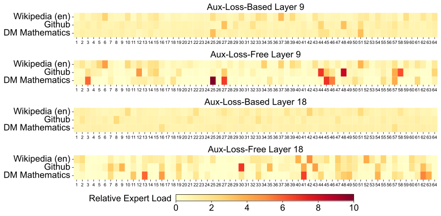
Source: Original paper v2 · Figure 9 · author vector asset. Click or press Enter to zoom.
三个领域各一列，先比较同一层 aux-loss-free 与 aux-loss-based 的颜色分布。relative expert load 是实际负载除以理想均衡负载：1 表示平均，>1 表示该领域偏爱此 expert，<1 表示较少选择。更鲜明的领域模式与专家分工一致，但只测选中频率，无法证明 expert 已学到某个确定语义，更不能证明这些分工本身导致下游分数提高。
作者还做 1B、3B 模型对照。sequence-wise auxiliary loss 的验证 loss 为 2.258、2.085；aux-free 为 2.253、2.080；将 auxiliary loss 放宽到 batch-wise 后也得到 2.253、2.080。这限制了因果结论：收益至少有一部分来自均衡统计范围的放宽，而不只来自“完全没有均衡梯度”。因此最有说服力的解释是允许单个序列/领域专门化，同时在更大范围内控制负载。
§5 Post-Training — 蒸馏、RL 与可比评测
§5.1 SFT — 教师轨迹怎样进入 V3
SFT 约 1.5M instances，两个 epochs，LR 5×10⁻⁶→1×10⁻⁶ 余弦下降，packed 样本之间设置 attention mask。数学、代码、逻辑类数据来自内部 DeepSeek-R1 推理教师：先通过专家 SFT/RL 改善短与长推理轨迹，再 rejection sampling 进入 V3 数据。非推理类结合 V2.5 生成与人工整理。
R1 教师能够给出验证与反思过程，并不意味着 V3 本身采用完整 R1 的推理策略或当前 R1 的后续版本。历史技术报告中的内部教师必须按当时语境理解。生成样本的对错过滤、长度分布和领域比例同样决定蒸馏是否有效。
§5.2 RL — GRPO 少一个 critic，仍有多个模型角色
§5.2.1 Reward model
规则奖励用于可验证数学与代码：数学按规定最终答案格式检查，代码使用编译与测试反馈。有自由形式 ground truth 时，模型奖励判断回答是否匹配；没有唯一答案的创作等任务则根据问题与回答评价。Reward model 从 V3 SFT checkpoint 训练，偏好数据包含判断过程与最终 reward，作者用它减少部分 reward hacking。规则也受测试覆盖与格式解析限制，模型判断也可能偏向自身文风；“更可靠”不是绝对不可操纵。
§5.2.2 GRPO
GRPO 从旧 policy 对每个 query 采样 G 个 outputs，按同组 reward 均值/标准差定义 advantage，优化 clipped policy ratio 与 reference KL。
| (26) |
Original LaTeX
\begin{split}\mathcal{J}_{GRPO}(\theta)&=\mathbb{E}{[q\sim P(Q),\{o_{i}\}_{i=1}^{G}\sim\pi_{\theta_{old}}(O|q)]}\\
&\frac{1}{G}\sum_{i=1}^{G}\left(\min\left(\frac{\pi_{\theta}(o_{i}|q)}{\pi_{\theta_{old}}(o_{i}|q)}A_{i},\text{clip}\left(\frac{\pi_{\theta}(o_{i}|q)}{\pi_{\theta_{old}}(o_{i}|q)},1-\varepsilon,1+\varepsilon\right)A_{i}\right)-\beta\mathbb{D}_{KL}\left(\pi_{\theta}||\pi_{ref}\right)\right),\end{split}| (27) |
Original LaTeX
\mathbb{D}_{KL}\left(\pi_{\theta}||\pi_{ref}\right)=\frac{\pi_{ref}(o_{i}|q)}{\pi_{\theta}(o_{i}|q)}-\log\frac{\pi_{ref}(o_{i}|q)}{\pi_{\theta}(o_{i}|q)}-1,| (28) |
Original LaTeX
A_{i}=\frac{r_{i}-{\operatorname{mean}(\{r_{1},r_{2},\cdots,r_{G}\})}}{{\operatorname{std}(\{r_{1},r_{2},\cdots,r_{G}\})}}.q 是题目，o_i 是第 i 条输出，π_old 是采样策略，π_θ 是更新策略，π_ref 是参考，r_i 是奖励，ε 控制 ratio clipping，β 控制 KL 惩罚。公式 (26) 采用论文写出的序列级概率比；token 级实现、mask、聚合和长度归一化的细节没有在这里完整给出，不能凭该简式制造一个可复现训练器。
reward [0,0,1,1] 时，按总体标准差 .5，advantage [-1,-1,1,1]。若同组 reward 全相同，标准差为零，必须明确 epsilon 或跳过处理，论文公式未写该边界。(27) 令 ratio x=π_ref/π_θ，x−ln x−1≥0；它作为采样估计而非直接枚举输出空间的 KL。Clipping 与 KL 约束更新幅度，不提供绝对防 reward hacking 或安全保证。
没有独立 value/critic 可以省其训练/激活开销，但 old policy、reference、reward model、rollout 与验证器依然需要资源；Table 1 的 post-training GPUh 不能自动外推整个教师开发成本。
§5.3.1–5.3.2 Evaluation settings & standard benchmarks
Table 6 — 数学代码强，知识与工程任务仍有弱项
| Benchmark (Metric) | DeepSeek | DeepSeek | Qwen2.5 | LLaMA-3.1 | Claude-3.5- | GPT-4o | DeepSeek | |
| V2-0506 | V2.5-0905 | 72B-Inst. | 405B-Inst. | Sonnet-1022 | 0513 | V3 | ||
| Architecture | MoE | MoE | Dense | Dense | - | - | MoE | |
| # Activated Params | 21B | 21B | 72B | 405B | - | - | 37B | |
| # Total Params | 236B | 236B | 72B | 405B | - | - | 671B | |
| English | MMLU (EM) | 78.2 | 80.6 | 85.3 | 88.6 | 88.3 | 87.2 | 88.5 |
| MMLU-Redux (EM) | 77.9 | 80.3 | 85.6 | 86.2 | 88.9 | 88.0 | 89.1 | |
| MMLU-Pro (EM) | 58.5 | 66.2 | 71.6 | 73.3 | 78.0 | 72.6 | 75.9 | |
| DROP (3-shot F1) | 83.0 | 87.8 | 76.7 | 88.7 | 88.3 | 83.7 | 91.6 | |
| IF-Eval (Prompt Strict) | 57.7 | 80.6 | 84.1 | 86.0 | 86.5 | 84.3 | 86.1 | |
| GPQA-Diamond (Pass@1) | 35.3 | 41.3 | 49.0 | 51.1 | 65.0 | 49.9 | 59.1 | |
| SimpleQA (Correct) | 9.0 | 10.2 | 9.1 | 17.1 | 28.4 | 38.2 | 24.9 | |
| FRAMES (Acc.) | 66.9 | 65.4 | 69.8 | 70.0 | 72.5 | 80.5 | 73.3 | |
| LongBench v2 (Acc.) | 31.6 | 35.4 | 39.4 | 36.1 | 41.0 | 48.1 | 48.7 | |
| Code | HumanEval-Mul (Pass@1) | 69.3 | 77.4 | 77.3 | 77.2 | 81.7 | 80.5 | 82.6 |
| LiveCodeBench (Pass@1-COT) | 18.8 | 29.2 | 31.1 | 28.4 | 36.3 | 33.4 | 40.5 | |
| LiveCodeBench (Pass@1) | 20.3 | 28.4 | 28.7 | 30.1 | 32.8 | 34.2 | 37.6 | |
| Codeforces (Percentile) | 17.5 | 35.6 | 24.8 | 25.3 | 20.3 | 23.6 | 51.6 | |
| SWE Verified (Resolved) | - | 22.6 | 23.8 | 24.5 | 50.8 | 38.8 | 42.0 | |
| Aider-Edit (Acc.) | 60.3 | 71.6 | 65.4 | 63.9 | 84.2 | 72.9 | 79.7 | |
| Aider-Polyglot (Acc.) | - | 18.2 | 7.6 | 5.8 | 45.3 | 16.0 | 49.6 | |
| Math | AIME 2024 (Pass@1) | 4.6 | 16.7 | 23.3 | 23.3 | 16.0 | 9.3 | 39.2 |
| MATH-500 (EM) | 56.3 | 74.7 | 80.0 | 73.8 | 78.3 | 74.6 | 90.2 | |
| CNMO 2024 (Pass@1) | 2.8 | 10.8 | 15.9 | 6.8 | 13.1 | 10.8 | 43.2 | |
| Chinese | CLUEWSC (EM) | 89.9 | 90.4 | 91.4 | 84.7 | 85.4 | 87.9 | 90.9 |
| C-Eval (EM) | 78.6 | 79.5 | 86.1 | 61.5 | 76.7 | 76.0 | 86.5 | |
| C-SimpleQA (Correct) | 48.5 | 54.1 | 48.4 | 50.4 | 51.3 | 59.3 | 64.8 |
本表包含 V2、V2.5、Qwen2.5 72B、Llama-3.1 405B、Claude-3.5-Sonnet-1022、GPT-4o-0513 与 V3。作者输出 cap 8192 tokens；AIME/CNMO 使用 temperature=.7、16 次运行，MATH-500 greedy；LiveCodeBench 时间窗口为 2024-08 至 2024-11，SWE 使用 Agentless，Aider 使用 diff 格式。这些条件是历史比较的组成部分。
数学三项相对最强表内开放基线：AIME 39.2 对 23.3，+15.9pp；MATH-500 90.2 对 80.0，+10.2pp；CNMO 43.2 对 15.9，+27.3pp。这不是三个项目都“约十个百分点”。代码中 LiveCodeBench-CoT 40.5 对 Claude 36.3，+4.2pp；多语言 HumanEval 82.6 对 81.7，差距 .9pp。Codeforces 的 51.6 是 percentile，不是 Pass@1 或 Elo。
弱项必须保留：SimpleQA 24.9 对 GPT-4o 38.2，差 −13.3pp；GPQA 59.1 对 Claude 65.0；MMLU-Pro 75.9 对 Claude 78.0。工程任务 SWE 42.0 对 Claude 50.8、Aider-Edit 79.7 对 84.2。另一方面 Aider-Polyglot 49.6 高于 Claude 45.3，因此“工程能力整体仍有差距”不能改写成每个工程项目都落后。
这些成绩属于 prompt、采样、tool scaffold 和 output cap 的共同结果。不同模型的训练数据、内部结构与计算预算不透明，既不能将优势归因于某个单独组件，也不能把 2024 的同列比较作为 2026 年 SOTA 排名。
指标拆解。若将有明确对错的 N 道题写成 accuracy，则 correct/N；相对改善写 (new−old)/old，百分点写 new−old。但论文没有逐题预测和标签，无法恢复 TP、FP、TN、FN。DROP 的 Precision/Recall/F1 定义在答案 token 的重叠上，没有自然的 true negatives；SWE resolved 为成功修复比例，LC win rate 为长度控制的偏好比较。不能用聚合分数虚构二分类 confusion matrix、总体 Precision/Recall 或统一 F1。
§5.3.3 / Table 7 — 开放式偏好与正文数值不一致
| Model | Arena-Hard | AlpacaEval 2.0 |
|---|---|---|
| DeepSeek-V2.5-0905 | 76.2 | 50.5 |
| Qwen2.5-72B-Instruct | 81.2 | 49.1 |
| LLaMA-3.1 405B | 69.3 | 40.5 |
| GPT-4o-0513 | 80.4 | 51.1 |
| Claude-Sonnet-3.5-1022 | 85.2 | 52.0 |
| DeepSeek-V3 | 85.5 | 70.0 |
Arena-Hard 与 AlpacaEval 2.0 都依赖 LLM judge 和基准答案，受位置、文风、长度以及 judge 偏差影响，不是绝对 human satisfaction。V3 Arena-Hard 85.5，Claude 85.2，差 .3pp；原文段落称超过 86%，与表内数不一致，本页采用可核对的 85.5，不擅自补一个新结果。
AlpacaEval V3 70.0 对 V2.5 50.5，提升 19.5pp，相对 38.61%；对表内 Claude 52.0 为 +18.0pp。不能写成“相对提高约 20%”。这说明该评测中的偏好强度，无法证明真实业务所有输出更合适。
§5.3.4 / Table 8 — RewardBench 与多数投票的额外成本
| Model | Chat | Chat-Hard | Safety | Reasoning | Average |
|---|---|---|---|---|---|
| GPT-4o-0513 | 96.6 | 70.4 | 86.7 | 84.9 | 84.7 |
| GPT-4o-0806 | 96.1 | 76.1 | 88.1 | 86.6 | 86.7 |
| GPT-4o-1120 | 95.8 | 71.3 | 86.2 | 85.2 | 84.6 |
| Claude-3.5-sonnet-0620 | 96.4 | 74.0 | 81.6 | 84.7 | 84.2 |
| Claude-3.5-sonnet-1022 | 96.4 | 79.7 | 91.1 | 87.6 | 88.7 |
| DeepSeek-V3 | 96.9 | 79.8 | 87.0 | 84.3 | 87.0 |
| DeepSeek-V3 (maj@6) | 96.9 | 82.6 | 89.5 | 89.2 | 89.6 |
RewardBench 测模型能否在偏好成对回答中选正确项，列为 Chat、Chat-Hard、Safety、Reasoning 和官方 Average。V3 单次 Average 87.0，maj@6 为 89.6，+2.6pp；Reasoning 84.3→89.2，+4.9pp。六次判断增加采样与判别成本，同单次模型不能在固定成本下直接比较。
Average 87.0 不等于四列简单平均，需保留 benchmark 的聚合权重；该表证明 judge 能力，不直接等价于使用它做 reward 后生成质量提高。同一模型作为 policy 与 judge 也可能强化共同偏差，需不同 judge 或人类审查补充。
§5.4.1 Distillation — 长度增长会影响总等待时间
Table 9 — 教师带来的质量和输出长度
| Model | LiveCodeBench-CoT | MATH-500 | ||
|---|---|---|---|---|
| Pass@1 | Length | Pass@1 | Length | |
| DeepSeek-V2.5 Baseline | 31.1 | 718 | 74.6 | 769 |
| DeepSeek-V2.5 +R1 Distill | 37.4 | 783 | 83.2 | 1510 |
这里是 V2.5 baseline 与 +R1 Distill 的专门实验，不应拿 Table 6 的 V2.5 数值覆盖。LiveCodeBench-CoT 31.1→37.4，+6.3pp，平均长度 718→783，+9.05%；MATH-500 74.6→83.2，+8.6pp，长度 769→1510，+96.36%。
蒸馏增强推理准确度，但数学平均输出几乎翻倍。如果 TPOT 不变，Decode 总时间也可能接近翻倍。业务应报告 TTFT、TPOT、完整回答 latency、tokens/request 与正确题目/秒；仅看 TPS 增加，容易漏掉回答变长造成的总延迟。该表不能证明 V3 采用相同长度分布，因为实验主体是 V2.5。
§5.4.2 Self-rewarding
作者在更一般的任务上使用 constitutional AI 思路，结合额外原则输入与 V3 自身投票结果作为反馈。论文报告它增强主观评测中的对齐，RewardBench 支持 judgment 能力，却不替代独立评价。需要检查原则内容、投票次数与模型偏差，避免把 judge 与 policy 共同偏好当成外部正确性。
§5.4.3 MTP serving
MTP 在多种生成主题报告额外 token 接受率 85–90%、约 1.8× TPS；是否开启验证、如何处理拒绝、batch 大小和核函数都影响真实增益。
在一个额外 proposal 的简化解释模型中，接受概率 a 给出每次 target 验证平均 1+a 个输出；若 draft、额外 verification 与管理开销相对原一步为 c：
LaTeX
\text{speedup}=\frac{1+a}{1+c},\qquad \text{break-even}:c<a.这只用于理解阈值，不是论文 profiling 结果。a=.85–.90、要求 speedup=1.8 时，模型隐含 c≈.0278–.0556。真实投机采样可能有 bonus token、不同验证 batching 和多层 proposal，必须按真实状态机统计，不能把这个 c 当作者实测开销。
接受率高，额外开销也必须足够低
一个额外 proposal 的简化模型：每次验证平均输出 1+a，整轮耗时为原一步的 1+c。改变接受率与额外成本，观察加速边界。下方长度预算取原 Table 9 的数学实验，用于说明输出增长的成本。
不含 TTFT、排队或工具调用。Table 9 是 V2.5 消融；接受率与 1.8× TPS 是 V3 作者报告，两者在这里仅做分开的解释，不声称实测联合效果。
验证端需要保留主模型与 proposer 的位置、KV 分配及接受前缀；拒绝后回滚未接受位置，commit 时只暴露已经验证的 token。停止符、最大输出长度、temperature、随机数及采样校正也属于正确性。EAGLE 类方法同样强调验证链路 [R7]，接受率只是一个局部指标。
§6 Conclusion & limitations — 整体方案的贡献与范围
论文最大的贡献是把 sparse capacity、低秩状态、反馈路由、训练目标和 kernel/network 共同优化，并给出可核对的资源账。MLA 与细粒度 DeepSeekMoE 继承自 V2；aux-loss-free 与 MTP 有各自先行工作。V3 的价值包含扩展到大规模训练、具体条件链 MTP、FP8 累加/存储策略和系统集成，而不是声称所有组件从零发明。
作者承认推荐部署单元较大、给小团队带来负担，并报告端到端生成速度比 V2 超过两倍，仍有优化空间；这属于作者服务配置的观察，与 MTP 的约 1.8× TPS 不是同一基线，不能相乘。未来方向包括更高效/更长 context 架构、更丰富训练信号、更深推理及多维评测，避免只优化固定榜单。
本页进一步区分“开放权重”“可读推理实现”“完整训练系统和数据可复现”：HAI-LLM、14.8T 数据、全部 RL 数据及服务 traces 未完整公开。要独立重建论文总成本与训练结果，公开推理代码还不够。
Appendix A — 贡献者与项目组织
原附录分为 Research & Engineering、Data Annotation、Business & Compliance 三类，类内按名字字母顺序列出；星号表示已离开团队。本页保留其作为团队协作证据与原 PDF 的附录入口，不擅自把成果归到某个个人，也不将人员名单当成技术消融。系统研究依赖跨角色共同决定接口：模型定义决定 shape，训练决定 gradient，基础设施决定通信与资源，评测决定结论边界。
Appendix B — FP8 失败路径与稳定性证据
Figure 10 — loss 接近不等于逐位相同
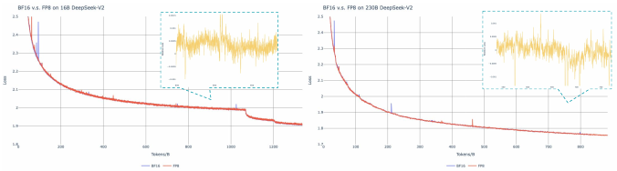
Source: Original paper v2 · Figure 10 · author vector asset. Click or press Enter to zoom.
左侧观察较小模型，右侧观察较大模型的 BF16 与 FP8 loss 曲线，再看 inset/差距。作者在约 16B、1.33T tokens 与 230B、.9T tokens 规模报告相对 loss 差异 <.25%；曲线经过 EMA=.9 平滑。它支持方案在这些训练规模中的稳定性，不是 671B 全程 paired BF16 复现，也不是所有下游任务误差 <.25% 或 logits bitwise 相同。
附录最有工程价值的反例是将 activation gradient 用 128×128 分块，16B 模型约 300B tokens 后发散。问题发生在 Dgrad 链路：一个块的 scale 被较大梯度支配，较小梯度的分辨率不足，反向继续传播与参数更新长期积累。正确诊断应回到 quantize→layout→GEMM→accumulate→gradient 的逐算子精度，而不是归因为“模型小所以弱”。
建议复现实验保存每层相对 L2、最大绝对误差、饱和率、零化率、scale 分布与梯度 norm；分别比较 Fprop、Dgrad、Wgrad，再跑短期对齐与长程稳定性。零饱和只排除 clipping，不能排除小值被舍入为零；局部 max relative error 对接近零的 reference 也需定义有效区间。这些是本页提出的验证方案，尚未执行 GPU 实验。
Appendix C — 全层专家模式与原文勘误
Figure 11 — 保留五个分面，解释标签差异
Source: Original paper v2 · Figure 11 · author vector asset. Click or press Enter to zoom.
原 PDF 本附录 caption 重复标为 Figure 10，arXiv HTML 连续编号为 Figure 11；本页采用连续 Figure 11 并保留该勘误。五个面板外部标签原写 Layers 1–7、7–13、13–19、19–25、25–27，但实际绘图分别是 1–6、7–12、13–18、19–24、25–26。页面同时提供原标签与实际范围，绝不将不存在的层补成数据。
按面板读同一 layer 的三个领域，再比较两种 balancing 的列。图覆盖的是消融模型的 26 个 plotted layers，不能据此把 V3 主模型改成 26 层。领域相关负载结构在多层存在，比单选两层的 Figure 9 更完整；它仍是 routing frequency，不是可验证的“第 x 个专家只学数学”语义标签。
Experiment audit — 哪些结论已经支持，哪些还需要测
| 问题 | 现有证据 | 能支持的结论 | 缺口与建议 |
|---|---|---|---|
| 训练资源可否算清 | Table 1 与 token/GPUh | 正式训练资源与作者价格假设一致 | 不含前期研究、教师、数据与服务成本 |
| MTP 有无收益 | Table 4 同 tokens、主体参数 | 部分代码/数学质量提升 | 等训练 FLOPs 对照、多深度消融 |
| aux-free 是否独特 | Table 5、§4.5.3 | 更宽 balancing scope 有利 | batch auxiliary 同 loss，需隔离 scope 与梯度 |
| FP8 是否稳定 | 附录 B loss 与失败案例 | 给定规模/布局下可接近 BF16 | 671B paired、逐层误差和下游敏感性 |
| DualPipe 是否隐藏通信 | 调度图与时间公式 | 在条件合适时减少 exposed 等待 | 端到端 traces、SM/L2 slowdown、跨拓扑 |
| MLA 是否快 | 缓存公式、官方 kernel | 逻辑缓存大幅减少 | 同 shape/精度/batch 的 TTFT、TPOT 曲线 |
| MTP serving 是否划算 | 作者接受率和 TPS | 该环境有速度收益 | 验证开销、P95/P99、输出长度、并发预算 |
| 权重能否完整复现训练 | 公开推理与权重 | 能验证配置/结构并部署 | 数据、完整 HAI-LLM、RL 与训练 logs |
比较基线的 size、训练 tokens、精度、硬件、tokenizer、上下文长度和优化程度需要分别控制。论文不同表有各自对照，不能把 small/large MoE 消融结果直接当成 671B 的精确组件贡献。评价 V3 应同时报告质量与资源，而不是按模型所有聚合分数计算一个未经定义的全局排名。
Related work & technology evolution — 截至 2026-10-29
下表与后续进展来自论文和官方资料；其中性能均为来源方报告，本页未独立复测。标题、年份、arXiv 标识和固定代码提交供复核。
| 工作 | 时间 | 核心想法 | 优势 | 限制 | 与 V3 的关系 |
|---|---|---|---|---|---|
| Sparsely-Gated MoE [R1] | 2017 | 只激活少量专家，均衡辅助目标 | 容量与计算分离 | 路由失衡、通信 | 条件计算的基础 |
| GQA [R2] | 2023 | 多 Q heads 共享 K/V heads | 较简单 KV 减少 | 共享程度限制表达 | MLA 的另一种缓存优化路线 |
| DeepSeek-V2 [R3] | 2024 | MLA + 细粒度/共享专家 | 缩 KV 与激活成本 | 仍有路由/服务复杂性 | V3 结构的直接前身 |
| Multi-token prediction [R4] | 2024 | 多个独立预测头增加信号 | 训练效率与投机机会 | 额外训练成本 | V3 改为保持因果链的串行深度 |
| Auxiliary-loss-free balancing [R5] | 2024 | 负载偏置影响选择 | 降低均衡目标干扰 | 反馈范围/频率需调优 | V3 扩至大规模并补序列小项 |
| SmoothQuant [R6] | 2022 | 迁移 outlier，INT8 部署 | 减推理成本 | 标定与敏感层 | 与训练期 FP8 不同环节 |
| EAGLE [R7] | 2024 | 特征级草稿 + target 验证 | 减少 target 调用 | 验证和 KV 状态开销 | 理解 MTP serving 的旁支 |
| DeepSeek-V3 [P] | 2024/2025 v2 | 结构、精度与集群共同优化 | 可核对正式训练资源 | 完整重现困难 | 本篇主体 |
| V3.2 [R8] | 2025 | DeepSeek Sparse Attention | 长上下文主 Attention 稀疏 | indexer 扫描仍有成本 | MLA 基础上改变 token 选择 |
| V4 [R9] | 2026 | CSA/HCA、mHC、Muon | 百万 context 的压缩路线 | 新预算/架构不直接可比 | 扩大压缩目标与训练方法 |
| V4.1-Flash [R10] | 2026-09-10 | Causal Encoder-Decoder、原生视觉 | 不同 Prefill/Decode 计算分配 | 新缓存口径与评测条件 | 截至核验日的官方后续更新 |
Before。2017 稀疏 MoE 将容量转化为条件计算；2023 GQA 让 KV heads 共享；2024 V2 用 low-rank latent 与共享专家进一步拆分持久状态和 FFN。V2 报告的 KV 减少 93.3% 与吞吐 5.76× 有其自己的基线，不应移植为 V3 的 benchmark。
This paper。V3 接受模型结构不能单独解决集群利用率：节点选择、bias、低精度、重叠 schedule 必须在同一套 shapes 和网络上配合。论文的历史意义是完整训练工程及可核对的成本，不只是新的 attention 公式。
After：V3.2。官方报告 [R8] 引入 indexer：weighted ReLU score 选择 top-2048 KV positions，主 attention 在选出的 token 上计算，仍基于 MLA。先冻结主体训练 indexer 1000 steps / 2.1B tokens，再用 15000 steps / 943.7B tokens 适配，辅以 indexer KL loss。主 attention 稀疏不等于全链路严格 O(S×2048)，indexer 本身仍扫描历史长度；必须把索引构造、top-K、KV gather 与 attention 一起算。
After：V4。官方报告 [R9] Pro 为 1.6T total / 49B active，Flash 为 284B / 13B，使用 CSA/HCA 的序列压缩、mHC 与 Muon，扩展至百万 context。作者在等效 FP8 口径下报告 Pro 的 1M context 逻辑 KV 为 V3.2 的约 10%、FLOPs 约 27%；这些不是 TPS、TTFT 或原 V3 BF16 比例。arXiv ID 为 2606，正文 metadata 写有另一个四月日期，故本页只记核实的年份而不制造一致的精确发表日。
Current：V4.1-Flash。2026-09-10 官方公告 [R10] 给出 552B MoE、Causal Encoder-Decoder、Prefill 8B active / Decode 16B active、原生视觉与百万 context；作者称相对前代 HBM cache 1/4、SSD cache 1/8。缓存格式、存储层级和参照不同，不能与本页 8.58 GiB BF16 latent 做直接比例。截至 2026-10-29，V4 不能再被描述为最新官方型号。
Current SOTA — 用统一预算重测，避免历史榜单错位
V3 的历史成绩受 8K output cap、2024 LCB 窗口、Codeforces percentile 和具体 agent scaffold 限制。V4 报告采用非推理 8K、高推理 128K、最大推理 384K，以及更长的 agent context/tool-call budget；新 LCB v6、Codeforces Elo 与多候选选优也不等价于 Table 6。V4.1 加入视觉与新的架构，不能用“active 参数更少”宣称所有任务更强。
本页不根据混合预算宣布全局 SOTA。严格比较应选择同一 dataset snapshot、同样 output tokens、sampling runs、tools、judge 与 latency/美元预算，同时记录总/激活参数、权重是否开放和运行 precision。当前能核实的是官方技术路线已经从“latent 压缩”发展到“token/序列选择与阶段计算分工”，不是哪一个模型在所有指标上无条件第一。
外部复现 — PyTorch / Nebius 的收益如何拆分
2026-03-25 官方技术文章 [R11] 用 256 张 B200、C4、671B、sequence=8192、local batch=64、TP2/PP2/EP32、完整 checkpoint 和 torch.compile 展示训练优化。报告 BF16 standard 651 TPS，BF16+DeepEP 859，MXFP8 grouped GEMM+DeepEP 918。
918/651−1 = 41.01% throughput 增长；等工作量用时下降 1−651/918 = 29.08%。FP8 的增量应与已有 DeepEP 的 859 比较：6.87%；859/651−1 = 31.95% 属于通信方案与系统变化的综合收益。不能把全部 41% 归于 MXFP8。来源对 TPS 的 cluster/per-GPU 分母描述不足，本页保留其报告口径，不私自换算。
16B、1500 steps 的 loss 对齐不能证明已复现 V3 的 14.8T/671B/H800 正式训练。新硬件、MXFP8 与本文 E4M3 分块策略也不同。文章里“sending weights”式简写不能替代实际 MoE dispatch 的 activation 数据流；后续 weight prefetch 是单独路径。
Implementation notes — 代码版本与链路检查
后续仓库会改变接口。本页于 2026-10-29 核验以下固定提交，防止读者按当前 main 拼接出不兼容环境：
| 仓库 | 核验版本 | 实用边界 |
|---|---|---|
| DeepSeek-V3 [C1] | 9b4e9788e4a3a731f7567338ed15d3ec549ce03b |
可读参考推理；MLA naive/absorb 和 gate 可核验，不是完整 HAI-LLM |
| DeepEP [C2] | f6aa38fe06cd4a0489e7730365d4e0114970a2f3 |
V2.5 转向 NCCL Gin/DeepJIT，移除 V1 NVSHMEM；仍需要 GPU SM |
| DeepGEMM [C3] | 5081f8513af57e61696de4f4f04b0e707ffb503e |
SM90/SM100 scale/layout 契约不同，cast/transpose 需调用方负责 |
| FlashMLA main [C4] | 395cb3afbb331fef7b1b21e9340861b9436b42d8 |
2026-09-30 移除 Hopper/V3/V3.2/V4.0 并改 KV 格式 |
| FlashMLA compatible [C4b] | ba89a3466e9470ad08ab39738d4e7bb66989e1e7 |
兼容历史 V3/Hopper 的固定版本；README 要求 SM90、CUDA12.8 |
| DualPipe [C5] | 030ce4325f4ebeb437da4ebc6d00a70469dd58ae |
需要自定义 overlap 实现；后续 DualPipeV 不是本文算法 |
优先核查调用链。Gate → group mask → Top-K → dispatch → grouped GEMM → combine → residual 应保证 ids、weights、offsets、有效 token 数和 buffer 生命周期一致。MLA → dequantized WKV → norm → position → cache write → attention → output 应保证 latent 的 layout、head 索引、position offset 与 YaRN scale 一致。问题应先定位到链路输出与生命周期，不应在没有证据时归因于版本、重新编译或模型能力。
官方 model.py 的 MLA 分支约 450–501 行，gate 约 575–599 行：naive 和 absorb 两种路径可以作为代数参考；归一化 latent、反量化 wkv_b、YaRN scale 的平方，以及 sigmoid gate 的原分数归一化和 route_scale=2.5 都值得逐项对照。实际位置以固定提交为准 [C1]。
FlashMLA compatible README 报告 dense MLA decode 在 H800 可达约 3000 GB/s、660 TFLOPs/s，是作者选定 shape 下的 kernel peak，不是 TPOT，也不代表所有 batch、context 与 FP8 格式都支持。当前 main 的新功能不可反向归入 2024 的论文实现。DeepEP 也没有普遍 zero-SM 保证；“通信全隐藏”仍需要验证资源竞争。
My insights — 值得继续研究的方向
1. 优化目标应从参数量转到生命周期。671B 权重、37B active、576 元素 latent 和 Top-8 各自描述不同阶段。把权重常驻、token dispatch、KV 写入/回滚与输出采样画在一条请求链上，才能知道 TTFT、TPOT、显存峰值和可用并发分别受谁限制。实现的可迁移性应来自清楚的格式/所有权契约。
2. 路由是一种带反馈的控制系统。偏置让统计均衡与内容分数分离，但仍有控制周期、延迟、步长、gamma 停止时间与 placement 的耦合。可以用突发领域切换实验测负载恢复时间、振荡、最慢专家 latency；比较 sequence/batch auxiliary 与 bias，隔离到底是 scope 还是 gradient 造成收益。这是本页提出的实验，不是论文已证明结果。
3. 精度验证必须穿过导出与布局变换。短期 loss 接近不足以约束端上 logits/OCR 或长期 gradient。应把训练 quantization、格式转换、transpose、export、runtime dequantization 和输出头串起来做逐算子误差追踪。以真实、多样化输入观察 outlier，针对敏感层调整 scale 和保留精度；零饱和还要配合零化率与输出任务验证。
4. 用“正确答案/秒”连接质量与性能。蒸馏会拉长输出，MTP 可缩 TPOT；二者共同决定完整回答时间。先固定请求与预算，记录 TTFT、TPOT、tokens/request、成功率、P95/P99 和 GPUh/正确解，才能判断服务是否真变好。模型质量与硬件 TPS 的单独排行榜都不足以替代这个账。
5. MLA 的下一步是选择，而不只压缩。latent 降低每位置状态，DSA 降低主 attention 访问位置，CSA/HCA 压缩序列，Encoder-Decoder 分离阶段计算。它们优化不同维度，未来应该在统一上下文和服务预算上拆开 indexer、cache、gather、attention 与调度成本。V3 提供了很好的工程起点，但没有免除后续路线重新验证的责任。
References & related readings
原论文：
- [P] DeepSeek-AI. DeepSeek-V3 Technical Report, arXiv:2412.19437v2. https://arxiv.org/abs/2412.19437v2
相关论文与官方后续：
- [R1] Shazeer et al. Outrageously Large Neural Networks: The Sparsely-Gated Mixture-of-Experts Layer (2017). https://arxiv.org/abs/1701.06538
- [R2] Ainslie et al. GQA: Training Generalized Multi-Query Transformer Models from Multi-Head Checkpoints (2023). https://arxiv.org/abs/2305.13245
- [R3] DeepSeek-AI. DeepSeek-V2: A Strong, Economical, and Efficient Mixture-of-Experts Language Model (2024). https://arxiv.org/abs/2405.04434
- [R4] Gloeckle et al. Better & Faster Large Language Models via Multi-token Prediction (2024). https://arxiv.org/abs/2404.19737
- [R5] Wang et al. Auxiliary-Loss-Free Load Balancing Strategy for Mixture-of-Experts (2024). https://arxiv.org/abs/2408.15664
- [R6] Xiao et al. SmoothQuant: Accurate and Efficient Post-Training Quantization for Large Language Models (2022). https://arxiv.org/abs/2211.10438
- [R7] Li et al. EAGLE: Speculative Sampling Requires Rethinking Feature Uncertainty (2024). https://arxiv.org/abs/2401.15077
- [R8] DeepSeek-AI. DeepSeek-V3.2: Pushing the Frontier of Open Large Language Models (2025). https://arxiv.org/abs/2512.02556
- [R9] DeepSeek-AI. DeepSeek-V4: Towards Highly Efficient Million-Token Context Intelligence (2026). https://arxiv.org/abs/2606.19348
- [R10] DeepSeek. DeepSeek-V4.1-Flash, official news, 2026-09-10. https://www.deepseek.com/en/news/deepseek-v4-1-flash/
- [R11] PyTorch / Nebius. Enabling Up to 41% Faster Pre-training: MXFP8 and DeepEP for DeepSeek-V3 on B200 with TorchTitan (2026-03-25). https://pytorch.org/blog/enabling-up-to-41-faster-pre-training-mxfp8-and-deepep-for-deepseek-v3-on-b200-with-torchtitan/
固定代码版本：
- [C1] DeepSeek-V3. https://github.com/deepseek-ai/DeepSeek-V3/tree/9b4e9788e4a3a731f7567338ed15d3ec549ce03b
- [C2] DeepEP. https://github.com/deepseek-ai/DeepEP/tree/f6aa38fe06cd4a0489e7730365d4e0114970a2f3
- [C3] DeepGEMM. https://github.com/deepseek-ai/DeepGEMM/tree/5081f8513af57e61696de4f4f04b0e707ffb503e
- [C4] FlashMLA main snapshot. https://github.com/deepseek-ai/FlashMLA/tree/395cb3afbb331fef7b1b21e9340861b9436b42d8
- [C4b] FlashMLA V3/Hopper compatible snapshot. https://github.com/deepseek-ai/FlashMLA/tree/ba89a3466e9470ad08ab39738d4e7bb66989e1e7
- [C5] DualPipe. https://github.com/deepseek-ai/DualPipe/tree/030ce4325f4ebeb437da4ebc6d00a70469dd58ae
Sparsely-Gated MoE 精读 · GQA 精读 · SmoothQuant 精读 · EAGLE 精读 · FlashAttention 精读 · RMSNorm 精读
完整来源记录：sources.json。两轮审校与数值验证：audit.md。本页创建日期与最后更新：2026-10-29。